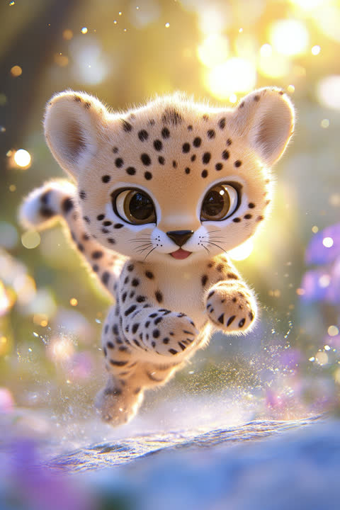

「考える前に動いてるチーター」タイプの五行は「火」の気質、ラッキーカラーは朱色。
「とりあえずやってみよう」の「とりあえず」が、誰よりも早い人です。みんなが会議で悩んでいる10分の間に、もう現場で試しています。リスクを前にしても足がすくまない度胸があり、ピンチの場面ほど目が輝くタイプ。細かい計画は苦手でも、走りながら答えを見つける嗅覚は天下一品で、その勢いが周りの空気ごと動かしていきます。占いの視点では、あなたは五行でいう「火」の気質を持つタイプ。触れたものを明るく燃え上がらせる、情熱と行動力の属性です。ラッキーカラーは朱色。【意識するといいこと】全力疾走の合間に、来た道を振り返る5分を挟んでみてください。次のダッシュが、もっと速くなります。
恋の始まりはいつも突然。「いいな」と思った瞬間には、もう連絡先を聞いている直球勝負の人です。駆け引きのターン制バトルは性に合わず、想いはその日のうちに伝えたい派。燃え上がりが早い分、終わった恋をいつまでも引きずらない、カラッとした切り替えの良さも持っています。恋愛運の面では、「火」のエネルギーが、一気に距離を縮める情熱的な恋を暗示しています。ただし着火の速さには少し注意を。開運アクションは、赤系のアイテムをひとつ身につけること。【意識するといいこと】あなたの時速に、相手はまだ助走中かもしれません。ときどき速度計を、相手に合わせてみましょう。
キックオフの号砲と同時に飛び出して、走りながらコースを覚えていく人です。企画書を磨き込む時間があるなら、まず一回試して現場の反応を見たい派。アクシデントが起きても慌てず、その場で最適な一手を打てる反射神経は、変化の激しい現場でこそ光ります。逆に、何も動かない停滞期間が一番の苦行です。仕事運の面では、「火」のエネルギーが、勢いに乗った時の爆発力を後押しする暗示。開運アクションは、朝日を浴びてから一日を始めること。【意識するといいこと】ピットイン(振り返り)を挟むレーサーほど速くなります。週に一度は、ラップタイムの確認を。
営業、イベント運営、救急救命士などの現場対応職、店舗経営や起業に向いています。予定通りに進まない状況こそが持ち味の出る舞台で、変化が激しく即断が求められる仕事では、考えるより速く動ける反射神経が最大の武器になります。
成長の鍵は「振り返りをスケジュールに組み込む」ことです。あなたは経験から学ぶ天才ですが、走りっぱなしだと同じ失敗も高速で繰り返してしまいます。週に15分、うまくいったこと・いかなかったことをメモするだけで、行動量がそのまま成長量に変わります。もうひとつは「待つ」も選択肢に入れること。動かないことが最善手の場面——相手の決断待ち、熟成が必要な交渉——で先に動いて崩すパターンを自覚できると、勝負どころの精度が一段上がります。
この診断では、性格・恋愛・仕事の3ブロックをそれぞれ独立して判定しています。3つとも同じESTPになるとは限りません——あなたの本当のタイプを、無料の3分診断で確かめてみませんか?